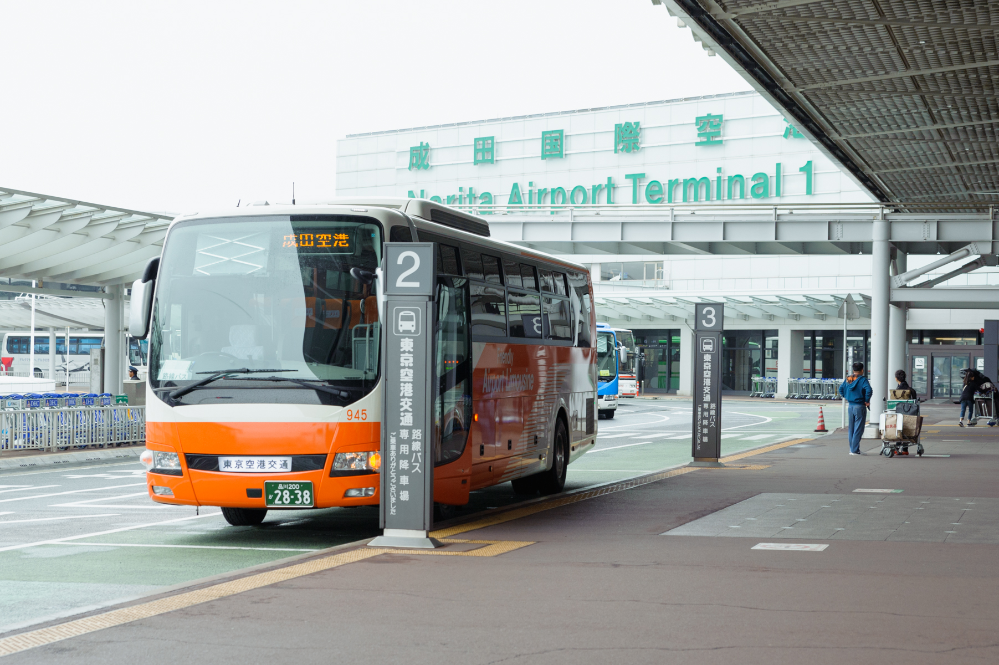
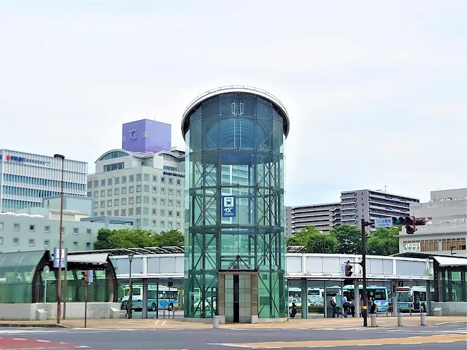
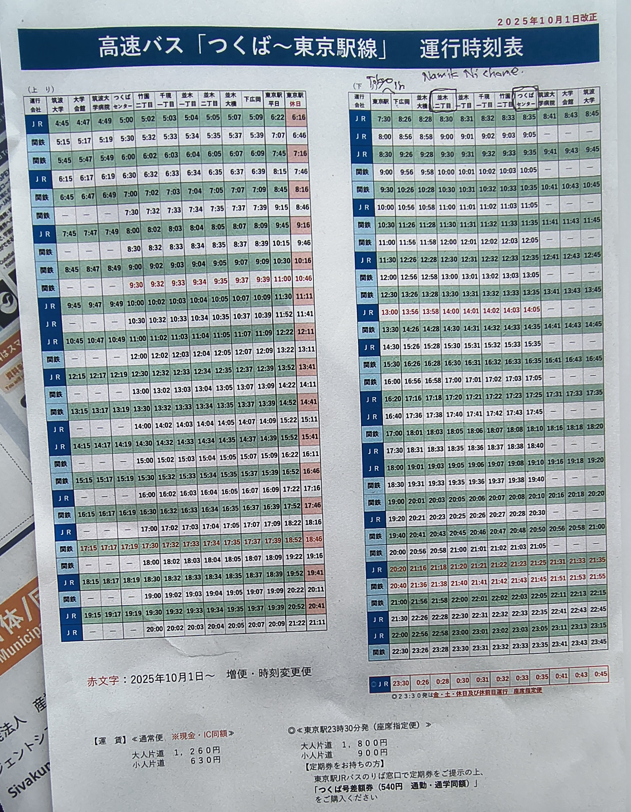
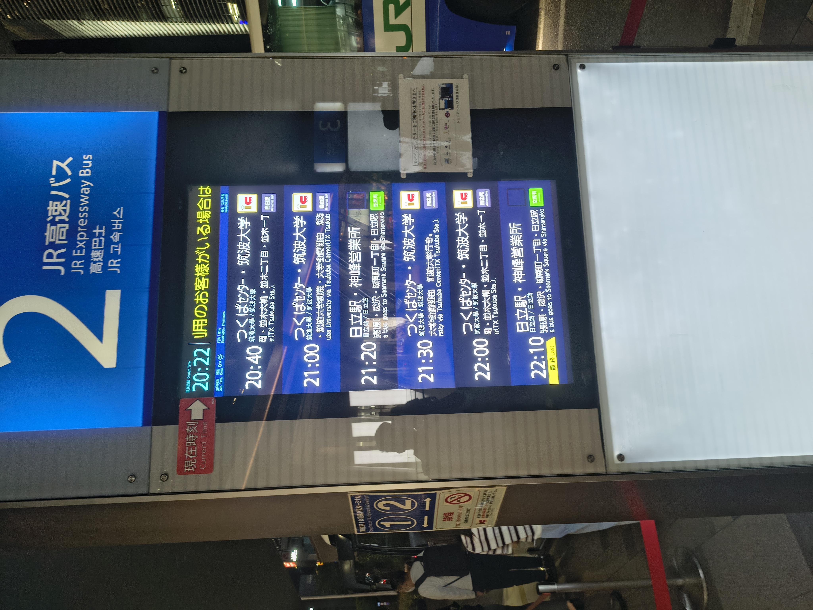
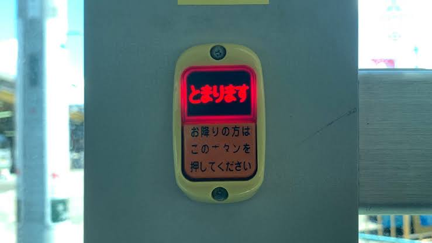

Travel
This page walks you through the journey from Narita Airport to AIST, how to get around once you're there, and how to make day trips to Tokyo without overthinking it.
Get an IC card the moment you land
Buy a Suica or PASMO the moment you land. You can get one at Narita Airport or any major railway station. It works on trains, buses, convenience stores, and vending machines, and it will save you from fumbling with ticket machines on day one.
Use Google Maps for live transit
Public transport in Japan, including trains and local public buses or highway buses, is tracked very reliably on Google Maps. Real time schedules, platform info, and delays all show up accurately.
Narita Airport Transfers
Arriving from Narita Airport
Narita is about 52 km from Tsukuba, and the trip takes roughly 70 minutes. You have three real options: train, taxi, or the limousine bus. Between the three, the limousine bus is the easiest, since the metro gets awkward with luggage and a taxi the whole way is expensive.
Buy your ticket before boarding:
- Terminals 1 & 2, Keisei Airport Bus counter
- Terminal 3, Travel Support GPA service counter
The bus drops you at Tsukuba Center, and from there you can grab a public bus, a taxi, or the AIST shuttle to reach campus.

Fare & travel time
One-way to Tsukuba costs around ¥2,400 and takes about 70 minutes. From Tsukuba Center, AIST Central is another ~15 minutes by car. Check with your PI on the best way to cover that last stretch.
Heading back to Narita Airport
The limousine bus is still the best option on the way out too, but it needs to be reserved by 7 PM JST the day before through the Kantetsu Express Bus site.
To get to Tsukuba Center in time, the AIST shuttle bus runs on weekdays, roughly every 30 minutes, from 8 AM to 5 PM.
Not confirmed
I'm not certain whether the airport limousine accepts IC cards. Reservations seem to be required regardless.
Getting Around AIST
AIST is a genuinely large campus, so don't expect to walk everywhere comfortably. A bicycle helps a lot, and you can borrow one from the on-campus housing (Sakura-kan and Keyaki-kan). From there, every research building (Central 1-7) is within 15 minutes on foot, or under 10 minutes by bicycle.
There are three gates on campus, and an ID card is required for entry and exit at all of them.
| Gate | Connects to | Good to know |
|---|---|---|
| Front | Namiki-2-chome bus stop | Main entry, closest to the bus stop |
| North | Doho Park | Several restaurants nearby (more in Food section) |
| South | 7-Eleven | Handy for anything last-minute (more in Shopping section) |
An official map is available online.
Getting to Tsukuba Center
Tsukuba Center is the closest station to campus.
About 3.5 km, roughly a 20-minute ride. Bicycle parking is available at Tsukuba Center on an hourly rate.
Available on working days.
An official schedule is available online.
Catch it from Namiki-2-chome (near the Front gate) or Namiki-Ohashi (~1 km away from the South gate). Both stops are roughly the same distance from Sakura-kan.

Exploring Around Tsukuba
Most food spots cluster around Doho Park (about a 10-minute walk from Sakura-kan) and Higashi-2-chome (around 2 km, a bicycle is the better option).
Tsukuba Center itself sits next to a large shopping complex, and there are a few shops selling handmade crafts tucked in around there, worth a look if you get the chance.
Iias Tsukuba is one of the biggest malls in the area, about 6 km, roughly 30 minutes by bicycle or an hour by public transport. MEGA Don Quijote is right next door for pretty much anything else you might need.
Personal favorite
Walk through Doho Park in the evening. It's quiet, well-lit, and one of the most pleasant spots to just sit and unwind after a long day in the lab.
Crossing the road
Crossing the street in Japan works a bit differently. At crossings with traffic lights, you press the button and wait for the green signal, same as most places. But at crossings without lights, drivers actually stop and wave pedestrians through. It's a nice change from having to hunt for a gap in traffic yourself.
Trips to Tokyo
Tokyo is about 60 km from Tsukuba.
Going in: Take the Tsukuba Express from Tsukuba Center to Akihabara. Trains run about every 10 minutes.
Coming back: The least stressful option is the highway bus (run jointly by JR and Kanto Tetsudo) from the JR Highway Bus Terminal at Tokyo Station, headed toward "Tsukuba Center" or "University of Tsukuba." It takes about 70 minutes and costs around ¥1,200 one-way. Get off at either Namiki-2-chome (third stop) or Namiki-Ohashi (second stop).


Which stop to pick
I'd get off at Namiki-Ohashi. It puts you right by the 7-Eleven near the South gate, perfect for a quick snack after the ride back.
Stop button
A stop button is accessible from every seat. If you want to get off at the next stop, press it to notify the driver. If another passenger has already pressed it, you don't need to press it again, otherwise the bus won't stop.

Amenities on the highway bus
Almost all highway buses and limousines provide free WiFi and have onboard toilets. Most are also equipped with either a power socket or a USB-A port.